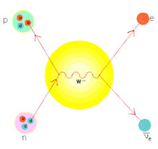

Los agujeros negros se forman en un proceso de colapso gravitatorio que fue ampliamente estudiado a mediados de siglo XX por diversos científicos, particularmente Robert Oppenheimer, Roger Penrose y Stephen Hawking, entre otros. Hawking, en su libro divulgativo Historia del tiempo: del Big Bang a los agujeros negros (1988), repasa algunos de los hechos bien establecidos sobre la formación de agujeros negros.
Este proceso comienza después de la "muerte" de una gigante roja (estrella de 10 a 25 o más veces la masa del Sol), entendiéndose por "muerte" la extinción total de su energía. Tras varios miles de millones de años de vida, la fuerza gravitatoria de dicha estrella comienza a ejercer fuerza sobre sí misma originando una masa concentrada en un pequeño volumen, convirtiéndose en una enana blanca. En este punto, dicho proceso puede proseguir hasta el colapso de dicho astro por la autoatracción gravitatoria que termina por convertir a esta enana blanca en un agujero negro. Este proceso acaba por reunir una fuerza de atracción tan fuerte que atrapa hasta la luz en éste.
En palabras más simples, un agujero negro es el resultado final de la acción de la gravedad extrema llevada hasta el límite posible. La misma gravedad que mantiene a la estrella estable, la empieza a comprimir hasta el punto que los átomos comienzan a aplastarse. Los electrones en órbita se acercan cada vez más al núcleo atómico y acaban fusionándose con los protones, formando más neutrones mediante el proceso.

Un protón y un electrón se aniquilan emitiendo un neutrón y un neutrino-electrón
El concepto de un cuerpo tan denso que ni siquiera la luz puede escapar de él fue descrito en un artículo enviado en 1783 a la Royal Society por el geólogo y clérigo inglés John Michell. Por aquel entonces la teoría de Newton de la gravitación y el concepto de velocidad de escape eran muy conocidas. Michell calculó que un cuerpo con una densidad 500 veces mayor a la del Sol, pero con su mismo radio, tendría, en su superficie, una velocidad de escape igual a la de la luz y sería invisible. En 1796, el matemático francés Pierre-Simon Laplace explicó en las dos primeras ediciones de su libro Exposition du Systeme du Monde la misma idea, aunque, al ganar terreno la idea de que la luz era una onda sin masa, en el siglo XIX fue descartada en ediciones posteriores.
En 1915, Einstein desarrolló la relatividad general y demostró que la luz era influida por la interacción gravitatoria. Unos meses después, Karl Schwarzschild encontró una solución a las ecuaciones de Einstein, donde un cuerpo pesado absorbería la luz. Se sabe ahora que el radio de Schwarzschild es el radio del horizonte de sucesos de un agujero negro que no gira, pero esto no era bien entendido en aquel entonces. El propio Schwarzschild pensó que no era más que una solución matemática, no física. En 1930, Subrahmanyan Chandrasekhar demostró que un cuerpo con una masa crítica (ahora conocida como límite de Chandrasekhar) y que no emitiese radiación, colapsaría por su propia gravedad porque no habría nada que se conociera que pudiera frenarla (para dicha masa la fuerza de atracción gravitatoria sería mayor que la proporcionada por el principio de exclusión de Pauli). Sin embargo, Eddington se opuso a la idea de que la estrella alcanzara un tamaño nulo, lo que implicaría una singularidad desnuda de materia, y que debería haber algo que inevitablemente pusiera freno al colapso, línea adoptada por la mayoría de los científicos.
En 1939, Robert Oppenheimer predijo que una estrella masiva podría sufrir un colapso gravitatorio y, por tanto, los agujeros negros podrían ser formados en la naturaleza. Esta teoría no fue objeto de mucha atención hasta los años 60, porque, después de la Segunda Guerra Mundial se tenía más interés en lo que sucedía a escala atómica.
En 1967, Stephen Hawking y Roger Penrose probaron que los agujeros negros son soluciones a las ecuaciones de Einstein y que en determinados casos no se podría impedir que se crease un agujero negro a partir de un colapso. La idea de agujero negro tomó fuerza con los avances científicos y experimentales que llevaron al descubrimiento de los púlsares. Poco después, en 1969, John Wheeler acuñó el término "agujero negro" durante una reunión de cosmólogos en Nueva York, para designar lo que anteriormente se llamó "estrella en colapso gravitatorio completo".

Primera imagen de un agujero negro